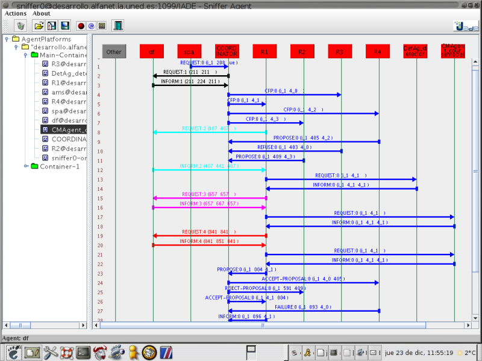

Para Russell y Norvig un agente es cualquier cosa capaz de percibir su medioambiente mediante sensores y actuar en ese medio mediante actuadores. Todo agente tiene una función u objetivo. Por ejemplo, un agente humano de bolsa tiene el objetivo de comprar y vender acciones respondiendo a los estímulos iniciados por su cliente y captados por sus sentidos. Una aspiradora tiene la función de aspirar cuando capta que ha sido encendida y no aspirar cuando es apagada.
Un agente inteligente ó racional trata de maximizar el valor de una medida de rendimiento, dada la secuencia de percepciones que ha observado hasta el momento.
Repitamos lo dicho ejemplificándolo. Un agente inteligente tiene un objetivo abstracto (ej: "ofrecer a un usuario información interesante"), tiene una forma de evaluar si esa información es interesante (ej: "el usuario lee la información sugerida"), tiene unos actuadores (ej: "una caja html donde presenta enlaces interesantes") y tiene unos sensores (ej: "un conjunto de sitios web para recoger información y filtrar la que sea interesante y el conjunto de clicks que puede hacer ó no el usuario de todos esos sitios web"). La pregunta ahora es ¿cómo mejorar ese rendimiento?.
Para Peter Norvig la programación estructurada tiene asociadas las aplicaciones basadas en entrada/salida, la programación orientada a objetos las aplicaciones basadas en eventos y la programación adaptativa las aplicaciones basadas en agentes inteligentes. Es decir, la respuesta a nuestra pregunta es usamos aprendizaje automático para mejorar el rendimiento.
No obstante, el deseo de desarrollar software adaptativo no es la única razón para utilizar una metodología de programación orientada a agentes. Los agentes tienen su campo de cultivo en la Inteligencia Artificial Distribuida (IAD) que, como su nombre indica, es la rama de la Inteligencia Artificial que trata de resolver de manera distribuida sus problemas, aprovechando así las ventajas propias de la programación distribuida: robustez, paralelismo y escalabilidad.
Desde un punto de vista de ingeniería de software este paradigma también supone una evolución a las necesidades de reutilización y encapsulamiento del código. Partiendo de la programación orientada a objetos, el mundo está compuesto por elementos llamados objetos que tienen atributos a los que es posible aplicarles métodos y estos pueden abstraerse a clases y estas clases pueden abstraerse en otras clases de las que heredan métodos y/o atributos ó de las que se componen. Sin embargo, este modelo del mundo es incompleto, pues en el mundo también existen agentes con capacidades de aprendizaje y autonomía.
También podemos usar agentes inteligentes para entender mejor el conocimiento ó para poder hacer simulación.

Pantallazo de jade en ejecución
Hay bastante software denominado como software de agentes para gnu/linux, sin embargo, no siempre se entiende la filosofía de agentes que subyace. La herramienta para desarrollar agentes más extendida y utilizada es JADE gracias a sus buenas herramientas gráficas, documentación, soporte, licencia LGPL, ... por desgracia para quienes no queremos caer en la "Trampa de Java" requiere JDK 1.4 ó posteriores.
Para ampliar información acerca de teoría de agentes recomiendo: Multiagent Systems: A Survey from a Machine Learning Perspective. Aunque leer Adaptive Software es un excelente complemento que aclara muchas ideas.
Tal vez este apartado no debería estar en este artículo, ya que no hay una aplicación práctica a los agentes inteligentes, debido a que es una cuestión más metodológica que facilita, entre otras cosas, poder hacer adaptación.